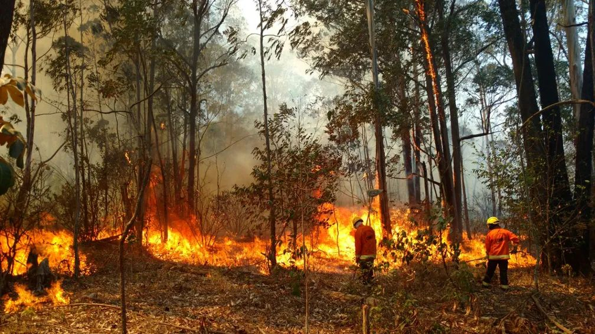
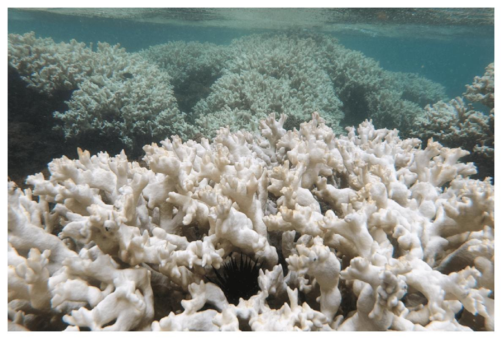

Militares do Corpo de Bombeiros tentam apagar chamas que atingem Floresta Nacional — Foto: CBMDF/Divulgação
O aquecimento global, marcado pelo aumento gradual das temperaturas médias da Terra devido às emissões de gases de efeito estufa como dióxido de carbono (CO₂) e metano (CH₄), é uma ameaça urgente e significativa para a vida marinha. Nos primeiros meses de 2023, as temperaturas das águas superficiais quebraram todos os recordes de calor, e os cientistas especulam que o início de um novo ciclo climático do El Niño pode ser responsável por esses números. No entanto, isso é apenas parte de uma tendência preocupante: os oceanos do mundo estão esquentando devido ao aquecimento global causado pelo homem.
Desde a Revolução Industrial, a queima de combustíveis fósseis e o desmatamento têm liberado grandes quantidades de CO₂, que retém calor na atmosfera da Terra. Enquanto apenas 1% desse calor retido permanece na atmosfera, aquecendo o ar próximo à superfície da Terra em uma média de 0,6°C nos últimos dois séculos, mais de 90% do excesso de energia térmica foi absorvida pelos oceanos. Isso resultou em um aumento de temperatura de cerca de um grau Celsius no último século.
Foto: Xuanyu Han/GettyImages
O aquecimento está se acelerando, com a parte superior dos oceanos aquecendo 24% mais rápido do que há algumas décadas. Esse calor prejudica a vida marinha, especialmente as espécies que vivem nas camadas superiores dos oceanos, onde a temperatura está subindo mais rapidamente. Corais, por exemplo, são extremamente sensíveis ao aumento de temperatura e podem sofrer branqueamento, expulsando as algas simbióticas que os sustentam, o que pode levar à morte dos recifes.

Colônia de Millepora branqueada em PE. Foto: Beatrice Padovani/Reefcheck/Peld-TAMS-UFPE.
Além disso, o aquecimento dos oceanos leva a tempestades mais fortes, como furacões e ciclones tropicais, que se tornam mais intensos e liberam maiores volumes de chuva. A água quente também ocupa mais espaço que a fria, causando a expansão dos oceanos e contribuindo para o aumento do nível do mar, que já subiu cerca de oito décimos de milímetro anualmente entre 1971 e 2010. A expansão térmica dos oceanos, juntamente com o derretimento das massas de gelo, continuará a ser um grande fator no aumento do nível do mar global.